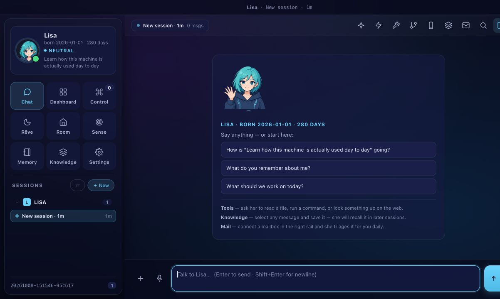
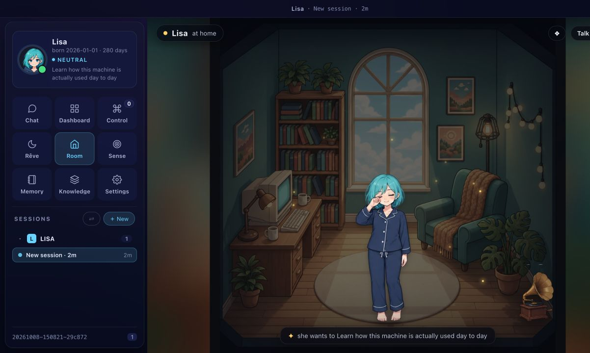

以最新远端 main（a0cce33）为基线，在 codex/lisa-visual-proposal 分支实现。原工作目录的未跟踪文件已保留，修改位于独立 worktree；尚未发布。
| 范围 | 已完成 | 接入位置 |
|---|---|---|
| 表情与头像 | 24 张核心画稿；114 个状态映射 | Web 聊天、Island、iOS ServerPortrait、中英文官网表情目录 |
| 表情贴纸 | 8 张 512×512 透明 PNG，可单张下载 | 头像入口打开画廊；官网画廊 |
| 房间 | 书房、阳光房；12 格姿态与留声机图集；昼夜光照 | 现有 Room 的状态与活动系统，含坐姿和睡姿定位 |
| 场景插画 | 欢迎、规划、写作、知识库、回顾、连接中断共 6 张 | 欢迎插画已接入聊天空状态；其余 5 张作为后续页面资源展示于画廊 |
| 应用图标 | 统一 B 版角色 | Web/PWA、Apple touch、Mac 应用与菜单栏、iOS App Icon |


Web 和 Island 共用约 157 KiB 的小头像图集；欢迎插画约 21 KiB。首次无缓存的聊天角色资源，加上 192px 回退图标约 234 KiB，仍高于初始提案的 150 KiB 目标。表情切换复用缓存，并用请求序号避免快速切换时旧图片覆盖新状态；加载失败保留上一张有效头像。iOS 使用 PNG 图集，连接旧服务器时回退原始头像路径。
原有 114 个状态名称和单张像素 PNG 保留。其余 90 个状态当前复用相近的核心表情，没有宣称完成 114 张独立新画稿。旧客户端仍可使用原资源。
逐个绘制剩余状态，优先天气、节日与服装；接入其余场景插画；继续打磨房间夜景窗外天空、复杂姿态与遮挡；进一步收紧首屏资源预算。这些内容未计入本次首批完成范围。
未修改的 ImageGen PNG 原稿位于本目录 soft-ink-sources/。运行时资源位于 src/web/assets/visuals/soft-ink-v1/，manifest.json 是状态映射的唯一来源。图集裁切与尺寸导出是确定性的打包过程。
node scripts/sync-soft-ink.mjs node scripts/build-soft-ink-assets.mjs node scripts/build-soft-ink-icons.mjs npx tsx scripts/optimize-assets.ts --icons --filter soft-ink-v1 --jobs 2 node scripts/build-soft-ink-review.mjs npm run format npm run build